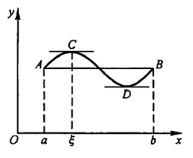
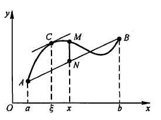
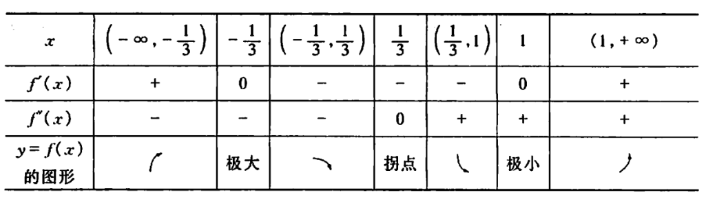
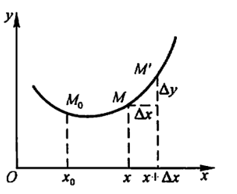
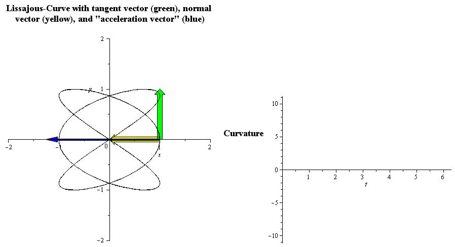
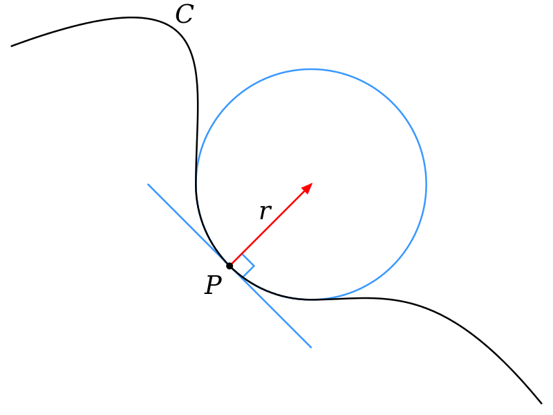

3. 微分中值定理与导数的应用¶
3.1. 微分中值定理¶
\(f'(a) > 0\) 函数图像左低右高
\(f'(a) < 0\) 函数图像左高右低
\(f(x)\) 在 \(x=a\) 处取极值, 则 \(f'(a) = 0\) 或 \(f'(a)\) 不存在
3.1.1. 罗尔Rolle定理¶
- 费马引理
设函数 \(y=f(x)\) 在点 \(x_0\) 的某邻域 \(U(x_0)\) 内有定义, 且在 \(x_0\) 处可导,
若对任意的 \(x \in U(x_0)\), 都有 \(f(x) \leqslant f(x_0)\) 或 \(f(x) \geqslant f(x_0)\),
则 \(f'(x_0) = 0\) (极大值或极小值)
- 罗尔定理
若函数\(y=f(x)\)满足
\(f(x) \in c[a,b]\)
\(f(x)\) 在 \((a,b)\) 上可导
\(f(a) = f(b)\),
则 \(\exists \xi \in (a,b)\) (开区间), 使得 \(f'(\xi) = 0\)
证明
\(f(x) \in c[a,b]\) \(\Rightarrow\) \(f(x)\) 在 \([a,b]\) 上有 \(m\) 和 \(M\)
\(m = M\), 则 \(f(x) \equiv C_0\), \(\forall \xi \in (a,b), f'(\xi) = 0\)
\(m < M\)
\(\because f(a) = f(b)\)
\(\therefore m, M\) 至少有一个在 \((a, b)\) 内
设 \(\exists \xi \in (a, b)\), 使得 \(f(\xi) = M\), 则 \(f'(\xi) = 0\) 或 \(f'(\xi)\) 不存在
\(\because f(x)\) 在 \((a, b)\) 内可导, \(\therefore f'(\xi) = 0\)
3.1.2. 拉格朗日Lagrange中值定理¶
若函数\(y=f(x)\)满足
\(f(x) \in c[a,b]\)
\(f(x)\) 在\((a,b)\) 上可导
则 \(\exists \xi \in (a,b)\), 使得 \(f'(\xi) = \frac{f(b) - f(a)}{b - a}\)
等价形式:
\(f'(\xi) = \frac{f(b) - f(a)}{b - a} \Leftrightarrow f(b) - f(a) = f'(\xi)(b - a) \Leftrightarrow f(b) - f(a) = f'[a + \theta(b - a)](b - a)\)
证明
曲线 \(L\): \(y = f(x)\)
直线 \(L_{AB}\): \(y - f(a) = \frac{f(b) - f(a)}{b - a}(x - a)\), 即 \(y = f(a) + \frac{f(b) - f(a)}{b - a}(x - a)\)
令 \(\phi(x) = L - L_{AB} = f(x) - f(a) - \frac{f(b) - f(a)}{b - a}(x - a)\)
可得 \(\phi(a) = \phi(b) = 0\), 而 \(\phi(x) \in c[a, b]\), \(\phi(x)\) 在 \((a, b)\) 可导
由罗尔定理, 可得 \(\exists \xi \in (a, b)\), 使得 \(\phi'(\xi) = 0\)
而 \(\phi'(x) = f'(x) - \frac{f(b) - f(a)}{b - a}\)
\(\therefore f'(\xi) = \frac{f(b) - f(a)}{b - a}\)
3.1.3. 柯西Cauchy中值定理¶
则 \(\exists \xi \in (a,b)\), 使得 \(\frac{f(b) - f(a)}{F(b) - F(a)} = \frac{f'(\xi)}{F'(\xi)}\)
Note
拉格朗日定理是柯西定理的特殊情况
当 \(F(x) = x\) 时, 柯西定理可转化为拉格朗日定理
证明
借用拉格朗日定理的证明 \(\phi(x) = f(x) - f(a) - \frac{f(b) - f(a)}{b - a}(x - a)\)
令 \(\phi(x) = f(x) - f(a) - \frac{f(b) - f(a)}{F(b) - F(a)}(F(x) - F(a))\)
\(\phi(x) \in c[a, b]\), \(\phi(x)\) 在 \((a, b)\) 内可导
\(\phi(a) = 0\), \(\phi(b) = 0\)
\(\because \phi(a) = \phi(b) = 0 \therefore \exists \xi \in (a, b)\), 使得 \(\phi'(\xi) = 0\)
而 \(\phi'(x) = f'(x) - \frac{f(b) - f(a)}{F(b) - F(a)}F'(x)\)
\(\therefore f'(\xi) - \frac{f(b) - f(a)}{F(b) - F(a)}F'(\xi) = 0\)
\(\Rightarrow \frac{f(b) - f(a)}{F(b) - F(a)} = \frac{f'(\xi)}{F'(\xi)}\)
3.2. 洛必达L’Hospital法则¶
- 未定式
当 \(x \to a (或x \to \infty)\) 时, \(f(x), F(x)\) 都趋于0或无穷,
则极限 \(\lim_{x \to a / x \to \infty} \frac{f(x)}{F(x)}\) 可能存在, 也可能不存在
通常把这种极限叫做未定式, 记作 \(\frac{0}{0}\) 或 \(\frac{\infty}{\infty}\)
若函数\(f(x), F(x)\)满足
当 \(x \to a\) 时, \(f(x), F(x) \to 0\)
\(f(x), F(x)\) 在 \(a\) 的某去心邻域内可导且 \(F'(x) \neq 0\)
\(\lim_{x \to a}\frac{f'(x)}{F'(x)}\) 存在或为无穷大,
则 \(\lim_{x \to a}\frac{f(x)}{F(x)} = \lim_{x \to a}\frac{f'(x)}{F'(x)}\)
若函数 \(f(x), F(x)\) 满足
当 \(x \to \infty\) 时, \(f(x), F(x) \to 0\)
\(|x| > N\) 时 \(f(x), F(x)\) 可导且 \(F'(x) \neq 0\)
\(\lim_{x \to \infty}\frac{f'(x)}{F'(x)}\) 存在或为无穷大,
则 \(\lim_{x \to \infty}\frac{f(x)}{F(x)} = \lim_{x \to \infty}\frac{f'(x)}{F'(x)}\)
3.3. 泰勒Taylor公式¶
对 \(f(x) = \frac{1}{1 + x^2}\) (蓝色) 的近似, 分别以 \(x=0\) (红) 和 \(x=1\) (绿) 为参考点¶
所有多项式都可以写成以某个实数 \(a\) 为参考点的 泰勒形式: \(c_0 + c_1(x-a) + c_2(x-a)^2 + ... + c_nx^n\) (升幂排列)
3.3.1. 泰勒公式¶
若函数 \(y=f(x)\) 在含有 \(x_0\) 的某个开区间 \((a,b)\) 内 \((n+1)\) 阶可导, 则有
\(f(x) = P_n(x) + R_n(x)\) (n阶泰勒公式), 其中
\(P_n(x) = f(x_0) + \frac{f'(x_0)}{1!}(x - x_0) + \frac{f''(x_0)}{2!}(x - x_0)^2 + ... + \frac{f^{(n)}(x_0)}{n!}(x - x_0)^n\) (n次泰勒多项式)
\(R_n(x) = \frac{f^{(n+1)}(\xi)}{(n + 1)!}(x - x_0)^{n + 1}, \xi \in (x_0, x)\) (拉格朗日型余项) (在不需要余项的精确表达式时, 也可以写成 \(o[(x - x_0)^n]\), 叫做皮亚诺Peano型余项)
当 \(x_0 = 0\) 时
\(P_n(x) = f(0) + \frac{f'(0)}{1!}(x) + \frac{f''(0)}{2!}(x)^2 + ... + \frac{f^{(n)}(0)}{n!}(x)^n\)
\(R_n(x) = \frac{f^{(n+1)}(\xi)}{(n + 1)!}(x)^{n + 1}, \xi \in (x_0, x)\) 或 \(o(x^n)\)
此时 \(f(x) = P_n(x) + R_n(x)\) 叫做麦克劳林Maclaurin公式
\(R_n(x)\) 即为函数 \(f(x)\) 与近似函数 \(P_n(x)\) 之间的误差
3.3.2. 常用函数的泰勒展开¶
\(e^x = 1+x+\frac{x^2}{2!}+\frac{x^3}{3!}+...+\frac{x^n}{n!}+o(x^n)\)
\(\sin{x} = x-\frac{x^3}{3!}+\frac{x^5}{5!}-...+\frac{(-1)^{n}}{(2n+1)!}(x^{2n+1})+o(x^{2n+1})\)
\(\cos{x} = 1-\frac{x^2}{2!}+\frac{x^4}{4!}-...+\frac{(-1)^n}{(2n)!}(x^{2n})+o(x^{2n})\)
\(\frac{1}{1-x} = 1 + x + x^2 + ... + x^n + o(x^n)\)
\(\frac{1}{1+x} = 1 - x + x^2 - ... + (-1)^nx^n + o(x^n)\)
\(\ln(1+x) = x - \frac{x^2}{2} + \frac{x^3}{3} - ... + \frac{(-1)^{n-1}}{n}x^n + o(x^n)\)
\((1+x)^a = 1 + ax + \frac{a(a-1)}{2!}x^2 + ... + \frac{a(a-1)...(a-n+1)}{n!}x^n + + o(x^n)\)
3.4. 中值定理常见题型¶
3.4.1. 证明\(f^{(n)}(\xi) = 0\)¶
多用罗尔定理 先找到 \(f(a) = f(b)\)
例
\(f(x) \in c[0, 2]\), 且在 \((0, 2)\) 上可导, \(2f(0) = f(1) + f(2)\)
证明 \(\exists \xi \in (0, 2)\), 使得 \(f'(\xi) = 0\)
- 证
\(f(x) \in c[1, 2]\) \(\Rightarrow\) \(f(x)\) 在 \([1, 2]\) 上有 \(m, M\)
\(m \leq \frac{f(1) + f(2)}{2} \leq M\)
\(\exists c \in [1,2]\), 使得 \(f(c) = \frac{f(1) + f(2)}{2}\)
\(\Rightarrow f(1) + f(2) = 2f(c) = 2f(0)\)
\(\because c \neq 0\), 而 \(f(0) = f(c)\)
由罗尔定理, \(\therefore \exists \xi \in (0, c) \subset (0, 2)\), 使得 \(f'(\xi) = 0\)
3.4.2. 结论中仅有 \(\xi\)¶
利用还原法 \([\ln{f(x)}]' = \frac{f'(x)}{f(x)}\) 构建 \(\frac{f'(x)}{f(x)}\), 然后构建辅助函数 \(\phi(x)\)
例
\(f(x), g(x)\) 在 \([a, b]\) 上连续, 在 \((a, b)\) 内可导, \(f(a) = f(b) = 0\), 证 \(\exists \xi \in (a, b)\), 使 \(f'(\xi) + f(\xi)g'(\xi) = 0\)
- 分析
\(f'(x) + f(x)g'(x) = 0\)
\(\Downarrow\)
\(\frac{f'(x)}{f(x)} + g'(x) = 0\)
\(\Downarrow\)
\([\ln{f(x)}]' + [\ln{e^{g(x)}}]' = 0\)
- 证
令 \(\phi(x) = f(x)e^{g(x)}\)
\(\because f(a) = f(b) = 0\)
\(\therefore \phi(a) = \phi(b) = 0\)
由罗尔定理, \(\exists \xi \in (a, b)\), 使得 \(\phi'(\xi) = 0\),
而 \(\phi'(x) = f'(x)e^{g(x)} + f(x)g'(x)e^{g(x)} \\= e^{g(x)}[f'(x) + f(x)g'(x)] = 0\)
带入 \(\xi\), 得 \(e^{g(\xi)}[f'(\xi) + f(\xi)g'(\xi)] = 0\)
\(\because e^{g(\xi)} \neq 0\), \(\therefore f'(\xi) + f(\xi)g'(\xi) = 0\)
3.4.3. 结论中有 \(\xi\) 和区间 \(a,b\)¶
\(\xi\) 和 \(a,b\) 可分离 分离后使用柯西或拉格朗日
例
\(0 < a < b\), 证明 \(\exists \xi \in (a, b)\), 使得 \(ae^b - be^a = (a-b)(1-\xi)e^{\xi}\)
- 分析
\(\frac{ae^b - be^a}{a-b} = (1-\xi)e^{\xi}\)
\(\Updownarrow\)
\(\frac{\frac{e^b}{b} - \frac{e^a}{a}}{\frac{1}{b}-\frac{1}{a}} = (1-\xi)e^{\xi}\)
- 证
令 \(f(x) = \frac{e^x}{x}\), \(F(x) = \frac{1}{x}\) (\(F(x) \neq 0\))
有 \(f(x), F(x) \in c[a,b]\), 且在 \((a,b)\) 内可导, \(F'(x) = -\frac{1}{x^2} \neq 0\)
由柯西定理, \(\exists \xi \in (a, b)\), 使得 \(\frac{f(b) - f(a)}{F(b) - F(a)} = \frac{f'(\xi)}{F'(\xi)}\)
\(\frac{\frac{e^b}{b} - \frac{e^a}{a}}{\frac{1}{b}-\frac{1}{a}} = \frac{\frac{(\xi - 1)e^{\xi}}{\xi^2}}{-\frac{1}{\xi^2}} = (1-\xi)e^{\xi}\)
\(\Rightarrow ae^b - be^a = (a-b)(1-\xi)e^{\xi}\)
\(\xi\) 和 \(a,b\) 不可分离 去分母移项, 还原, 构造辅助函数
例
\(f(x), g(x) \in c[a,b]\), 且在 \((a,b)\) 内可导, \(g'(x) \neq 0\)
证明: \(\exists \xi \in (a, b)\), 使 \(\frac{f(b) - f(\xi)}{g(\xi) - g(a)} = \frac{f'(\xi)}{g'(\xi)}\)
- 分析
\(\frac{f(b) - f(\xi)}{g(\xi) - g(a)} = \frac{f'(\xi)}{g'(\xi)} \\ \Rightarrow f(b)g'(x) - f(x)g'(x) - f'(x)g(x) + f'(x)g(a) = 0\)
即 \([f(b)g(x) - f(x)g(x) + f(x)g(a)]' = 0\)
- 证
令 \(\phi(x) = f(b)g(x) - f(x)g(x) + f(x)g(a)\), 则 \(\phi'(x) = f(b)g'(x) - f(x)g'(x) - f'(x)g(x) + f'(x)g(a)\)
\(\phi(a) = f(b)g(a) = \phi(b)\), 由罗尔定理, \(\exists \xi \in (a,b)\), 使得 \(\phi'(\xi) = 0\)
代入得 \(\phi'(\xi) = f(b)g'(\xi) - f(\xi)g'(\xi) - f'(\xi)g(\xi) + f'(\xi)g(a) = 0\)
即 \(\frac{f(b) - f(\xi)}{g(\xi) - g(a)} = \frac{f'(\xi)}{g'(\xi)}\)
3.4.4. 结论中有 \(\xi\) 和 \(\eta\)¶
结论中仅有 \(f'(\xi)\) 和 \(f'(\eta)\), 找三个点, 两次拉格朗日
例
\(f(x) \in c[0, 1]\), 且在 \((0, 1)\) 内可导
\(f(0) = 0, f(1) = 1\)
证明: ① \(\exists c \in (0, 1), f(c) = 1-c\) ② \(\exists \xi, \eta \in (0, 1), f'(\xi)f'(\eta)=1\)
- 证
①令 \(\phi(x) = f(x) - 1 + x\)
\(\phi(0) = -1, \phi(1) = 1\)
\(\because \phi(0)\phi(1) < 0, \therefore \exists c \in (0, 1)\), 使得 \(\phi(c) = 0\) (零点定理)
即 \(f(c) = 1 - c\)
②由拉格朗日定理, \(\exists \xi \in (0, c), \exists \eta \in (c, 1)\)
使得 \(f'(\xi) = \frac{f(c) - f(0)}{c - 0}\), \(f'(\eta) = \frac{f(1) - f(c)}{1 - c}\)
\(\Rightarrow f'(\xi) = \frac{1-c}{c}\), \(f'(\eta) = \frac{c}{1-c}\)
\(\therefore f'(\xi)f'(\eta)=1\)
\(\xi\) 和\(\eta\) 复杂程度不同
两种情况:
复杂中值项为 \(( )'\) 的形式, 使用拉格朗日定理
复杂中值项为 \(\frac{( )'}{( )'}\) 的形式, 使用柯西定理
例
\(f(x) \in c[a, b]\), 且在 \((a,b)\) 内可导 ( \(a>0\))
证明 \(\exists \xi, \eta \in (a,b)\), 使得 \(f'(\xi) = \frac{f(\eta)}{2\eta}(a+b)\)
- 证
令 \(F(x) = x^2, F'(x) = 2x \neq 0\)
\(\exists \eta \in (a,b)\), 使得 \(\frac{f(b) - f(a)}{F(b) - F(a)} = \frac{f'(\eta)}{F'(\eta)}\)
代入可得 \(\frac{f(b) - f(a)}{b^2 - a^2} = \frac{f'(\eta)}{2\eta}\)
\(\Rightarrow \frac{f(b) - f(a)}{b - a} = \frac{f'(\eta)}{2\eta}(a+b)\)
由拉格朗日定理, \(\exists \xi \in (a,b)\), 使得 \(f'(\xi) = \frac{f(b) - f(a)}{b - a}\)
3.4.5. 泰勒¶
3.5. 单调性, 凹凸性和极值¶
3.5.1. 极值定义¶
对 \(y = f(x) (x \in D), x_0 \in D\)
若 \(\exists \delta > 0\), 当 \(0 < |x - x_0| < \delta\) 时, \(f(x) < f(x_0)\), 则 \(x_0\) 为 极大点, \(f(x_0)\) 为 极大值
若 \(\exists \delta > 0\), 当 \(0 < |x - x_0| < \delta\) 时, \(f(x) > f(x_0)\), 则 \(x_0\) 为 极小点, \(f(x_0)\) 为 极小值
3.5.2. 求极值步骤¶
找出定义域
找出 \(f'(x) = 0\) (驻点) 或不存在 (但不一定就是极值点)
判断方法
\(\begin{cases} x < x_0 \text{时}, f'(x) < 0 \\ x > x_0 \text{时}, f'(x) > 0 \end{cases} \Rightarrow x_0\) 为 极小值
或 \(f'(x_0) = 0, f''(x_0) > 0\)
\(\begin{cases} x < x_0 \text{时}, f'(x) > 0 \\ x > x_0 \text{时}, f'(x) < 0 \end{cases} \Rightarrow x_0\) 为 极大值
或 \(f'(x_0) = 0， f''(x_0) < 0\)
3.5.3. 最大值与最小值¶
\(f(x) \in c[a,b]\), 找出 \(x_1, ..., x_n\) 使得 \(f'(x)=0\text{或不存在}\), 则:
最大值为 \(M = max(f(a), f(x_1), ..., f(x_n), f(b))\)
最小值为 \(m = min(f(a), f(x_1), ..., f(x_n), f(b))\)
\(f(x) \in c(-\infty, +\infty)\),
若 \(f(x)\) 在 \((-\infty, +\infty)\) 有唯一的极值, 则一定也为最值
3.5.4. 凹凸性¶
\(\forall x_1, x_2 \in D (x_1 \neq x_2)\), 都有 \(f(\frac{x_1+x_2}{2}) < \frac{f(x_1)+f(x_2)}{2}\),
则 \(f(x)\) 在 \(D\) 上为凹函数, 此时 \(f''(x_0) > 0\)
\(\forall x_1, x_2 \in D (x_1 \neq x_2)\), 都有 \(f(\frac{x_1+x_2}{2}) > \frac{f(x_1)+f(x_2)}{2}\),
则 \(f(x)\) 在 \(D\) 上为凸函数, 此时 \(f''(x_0) < 0\)
3.5.5. 拐点¶
若当 \(x=x_0\) 时, \(y=f(x)\) 两侧的凹凸性不同, 则称 \((x_0, f(x_0))\) 为 \(y=f(x)\) 的拐点
3.6. 函数图像绘制¶
3.6.1. 步骤¶
确定定义域, 奇偶性和周期性等
找出一阶导数的驻点和不存在的点
找出二阶导数的驻点和不存在的点
找出水平, 铅直, 斜渐近线
使用2.和3.找出的点将定义域划分
例

3.6.2. 渐近线¶
水平渐近线¶
令 \(x\) 趋于正负无穷大, 如果极限存在, 即为水平渐近线
若 \(\lim_{x \to +\infty}f(x) = A\) 或 \(\lim_{x \to -\infty}f(x) = A\), 则称直线 \(y = A\) 是函数 \(f(x)\) 的水平渐近线
铅直渐近线¶
只会在函数不连续的点出现; 在此点求极限, 若左右极限有一个趋于无穷大, 则在此点有铅直渐近线
若 \(\lim_{x \to x_0}f(x) = \infty\), 则称直线 \(x = x_0\) 是函数 \(f(x)\) 的铅直渐近线
斜渐近线¶
如果一个方向上有水平渐近线, 就不会有斜渐近线
若 \(\lim_{x \to +\infty}f(x) - ax - b = 0\) 或 \(\lim_{x \to -\infty}f(x) - ax - b = 0\), 则称直线 \(y = ax + b\) 是函数 \(f(x)\) 的斜渐近线
先求极限 \(\lim_{x \to \infty}\frac{f(x)}{x}\), 若极限存在, 其值为 \(a\), 则可确定有斜渐近线
求极限 \(\lim_{x \to \infty}\frac{f(x)}{x} - ax\), 若极限为 \(b\), 则斜渐近线为 \(y = ax + b\)
3.7. 曲率¶
3.7.1. 弧微分¶
\(\overset{\frown} {MM'}\) 的长度为 \(\Delta{S}\)
而 \((\Delta{S})^2 \approx (\Delta{x})^2 + (\Delta{y})^2\)
当 \(\Delta{x} \to 0\) 时, 有 \((ds)^2 = (dx)^2 + (dy)^2\)
即 \(ds = \sqrt{(dx)^2 + (dy)^2}\)
- \(y = f(x)\)
\(ds = \sqrt{(dx)^2 + (dy)^2} = \sqrt{1 + (\frac{dy}{dx})^2}dx\)
即 \(ds = \sqrt{1 + (f'(x))^2}dx\)
- \(\begin{cases} x = g(t) \\ y = \phi(t) \end{cases}\)
\(ds = \sqrt{(dx)^2 + (dy)^2} = \sqrt{(\frac{dx}{dt})^2 + (\frac{dy}{dt})^2}dt\)
即 \(ds = \sqrt{(g'(t))^2 + (\phi'(t))^2}dt\)
- \(\begin{cases} x = r(\theta)\cos{\theta} \\ y = r(\theta)\sin{\theta} \end{cases}\)
\(ds = \sqrt{(dx)^2 + (dy)^2} = \sqrt{(\frac{dx}{d\theta})^2 + (\frac{dy}{d\theta})^2}d\theta\)
即 \(ds = \sqrt{(r(\theta))^2 + (r'(\theta))^2}d\theta\)
3.7.2. 曲率¶
曲率即曲线的弯曲程度
\(K = |\frac{d\alpha}{ds}| = \frac{|y''|}{(1 + y'^2)^{\frac{3}{2}}}\)
3.7.3. 曲率半径¶
\(r = \frac{1}{k}\)